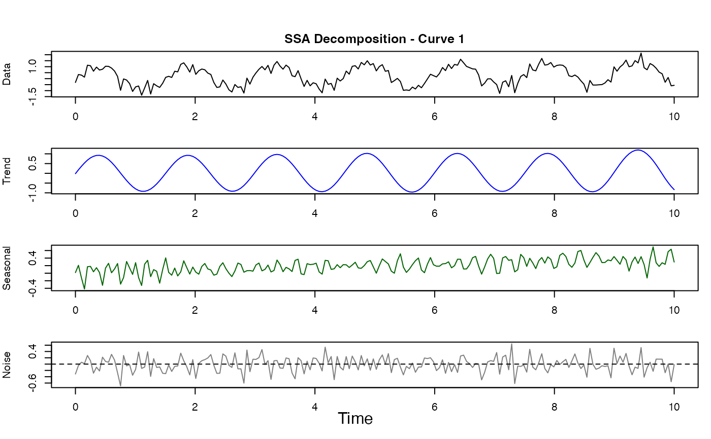
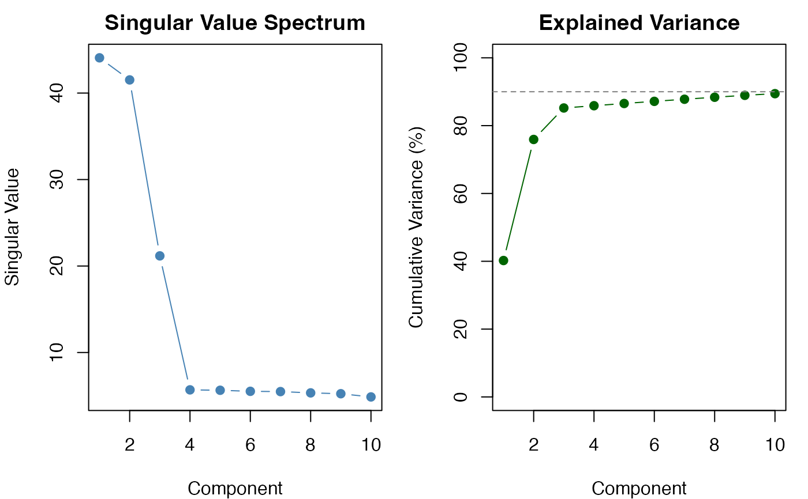

Performs Singular Spectrum Analysis on functional data to decompose each curve into trend, seasonal (oscillatory), and noise components. SSA is a model-free, non-parametric technique based on singular value decomposition of the trajectory matrix.
Value
A list of class "ssa_result" with components:
- trend
fdata object containing reconstructed trend component
- seasonal
fdata object containing reconstructed seasonal component
- noise
fdata object containing noise/residual component
- singular.values
Singular values from SVD (sorted descending)
- contributions
Proportion of variance explained by each component
- window.length
Window length used
- n.components
Number of components extracted
- detected.period
Auto-detected period (if any)
- confidence
Confidence score for detected period
- call
The function call
Details
The SSA algorithm consists of four stages:
1. Embedding: The time series is converted into a trajectory matrix by arranging lagged versions of the series as columns.
2. SVD Decomposition: Singular value decomposition of the trajectory matrix produces orthogonal components.
3. Grouping: Components are grouped into trend (slowly varying), seasonal (oscillatory), and noise. Auto-detection uses sign change analysis and autocorrelation.
4. Reconstruction: Diagonal averaging (Hankelization) converts grouped trajectory matrices back to time series.
SSA is particularly suited for:
Short time series where spectral methods fail
Noisy data with weak periodic signals
Non-stationary data with changing trend
Separating multiple periodicities
References
Golyandina, N., & Zhigljavsky, A. (2013). Singular Spectrum Analysis for Time Series. Springer.
Elsner, J. B., & Tsonis, A. A. (1996). Singular Spectrum Analysis: A New Tool in Time Series Analysis. Plenum Press.
Examples
# Signal with trend + seasonal + noise
t <- seq(0, 10, length.out = 200)
X <- matrix(0.05 * t + sin(2 * pi * t / 1.5) + rnorm(length(t), sd = 0.3), nrow = 1)
fd <- fdata(X, argvals = t)
# Perform SSA
result <- ssa.fd(fd)
print(result)
#> Singular Spectrum Analysis (SSA)
#> --------------------------------
#> Window length: 50
#> N components: 10
#> Detected period: 2.00
#> Confidence: 0.4804
#>
#> Number of curves: 1
#> Series length: 200
#>
#> Top component contributions:
#> Component 1: 40.2%
#> Component 2: 35.7%
#> Component 3: 9.3%
#> Component 4: 0.7%
#> Component 5: 0.7%
#> Cumulative: 86.5%
#>
#> Variance decomposition:
#> Trend: 83.6%
#> Seasonal: 6.0%
#> Noise: 10.5%
# Plot components
plot(result)

# Examine singular value spectrum (scree plot)
plot(result, type = "spectrum")
